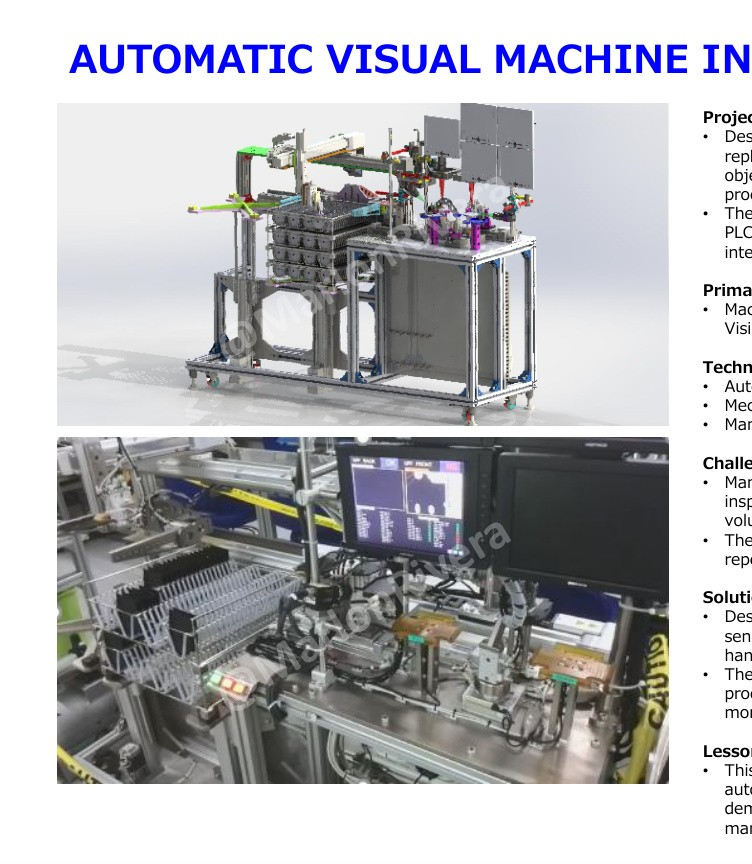
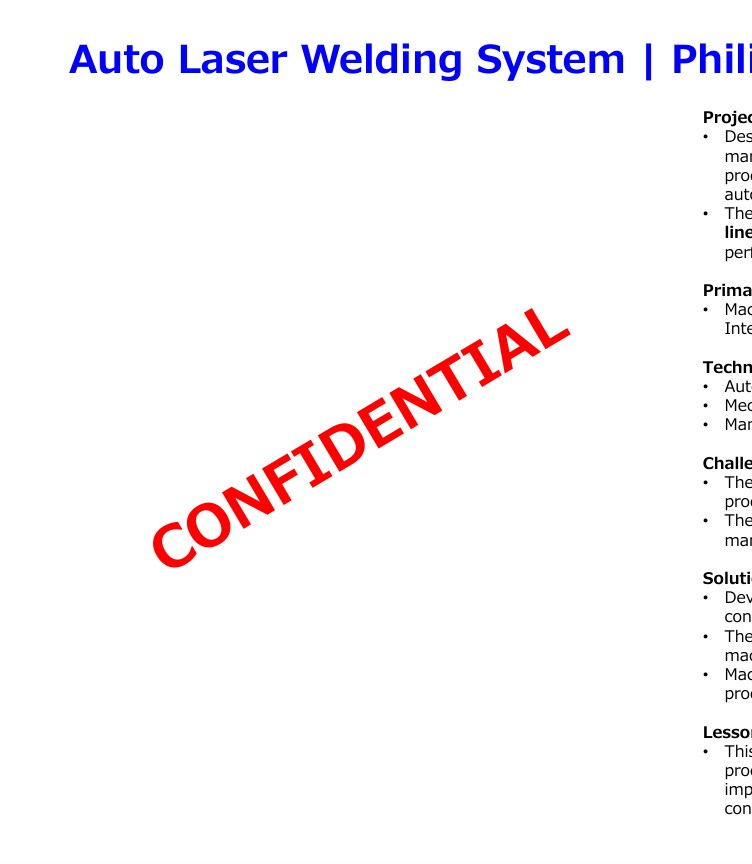
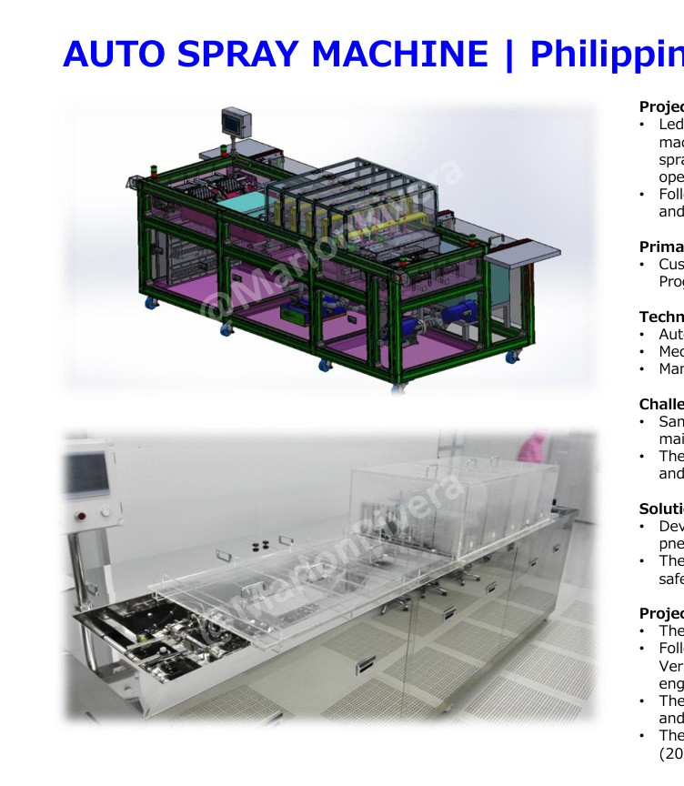
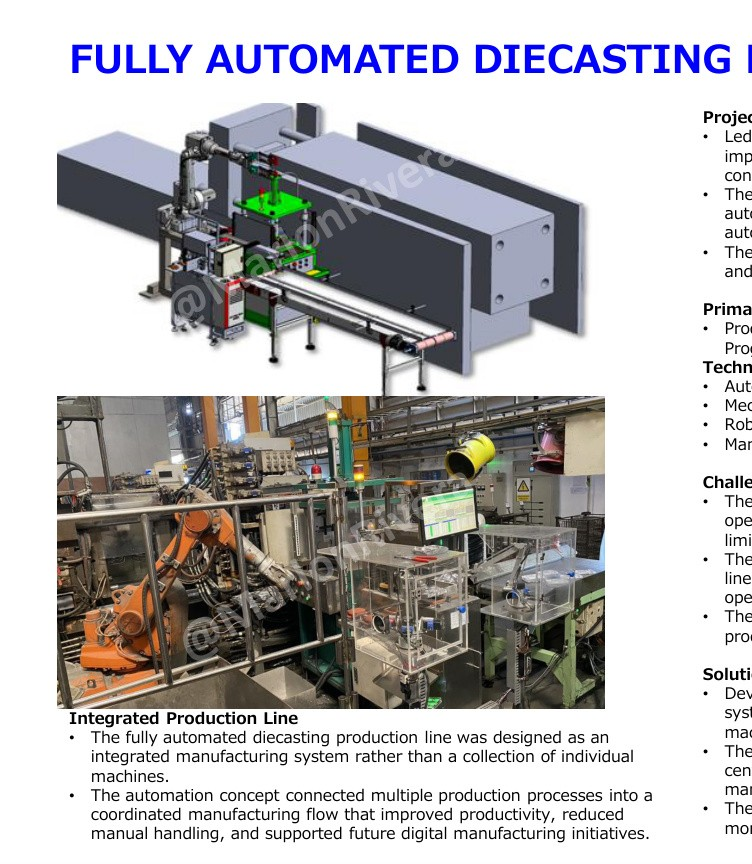
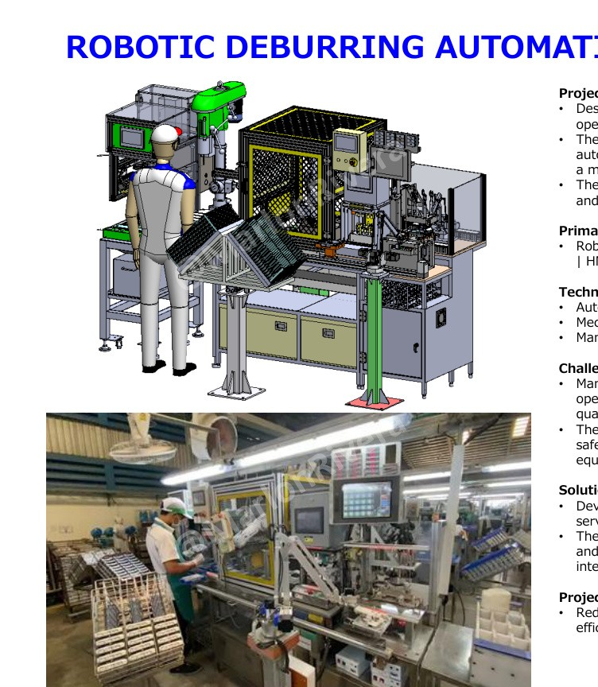
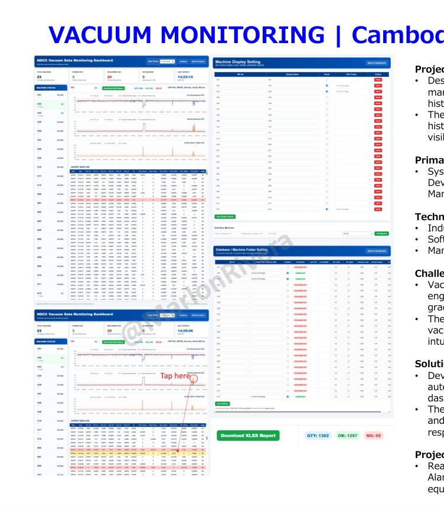
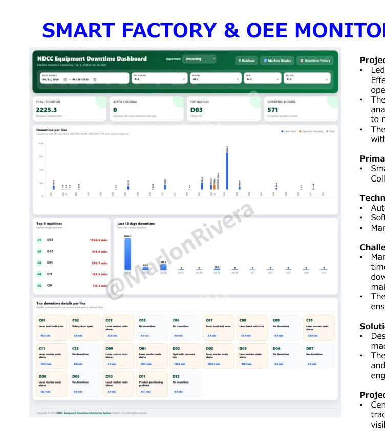

Complete Machine Development
Requirements, concept, SolidWorks design, BOM, controls, assembly, programming, FAT/SAT and production handover.
Senior Automation & Controls Engineer
13+ years of international experience in machine design, automation programming, robotics, servo motion, vision systems and Smart Manufacturing.
About
I deliver complete automation projects—from customer requirements and concept design through mechanical development, controls integration, assembly, testing, commissioning and production handover.
My background combines hands-on engineering with leadership across high-volume manufacturing, custom machine development, robot integration, smart-factory monitoring and continuous improvement.
Recruiter Quick View
Requirements, concept, SolidWorks design, BOM, controls, assembly, programming, FAT/SAT and production handover.
A multidisciplinary profile covering machine design, PLC/HMI, robots, servo systems, pneumatics, vision and Python dashboards.
Projects delivered across the Philippines, Thailand, Vietnam, Korea and Cambodia with multicultural teams and suppliers.
Current engineering leadership experience while remaining directly involved in design reviews, troubleshooting and project execution.
Engineering Process
Product, cycle time, quality, safety, space, budget and acceptance criteria.
Feasibility, architecture, process sequence, risk review and proposal.
SolidWorks assemblies, components, controls, drawings, BOM and documents.
Fabrication, assembly, wiring, programming, robot integration and testing.
Debugging, cycle-time study, FAT/SAT and qualification.
Training, manuals, preventive maintenance and production support.
Technical Matrix
Case Studies

Automated visual inspection replacing manual quality checks in high-volume electronics manufacturing.
Open case study →
Precision automated laser welding supporting approximately 50,000 units per line per month.
Open case study →
Complete machine design and automation platform later upgraded and deployed internationally.
Open case study →
Integrated robots, transfer systems, trimming, deburring and monitoring into one coordinated line.
Open case study →
Nachi robot cell integrating PLC, HMI, servo motion, pneumatic clamping and safety.
Open case study →
Centralized predictive-maintenance platform with real-time dashboards, trends and alarms.
Open case study →
PLC-integrated platform centralizing machine status, downtime, OEE and production analytics.
Open case study →Career Journey
Lead automation, maintenance, machine design and Smart Factory initiatives supporting 100+ production lines and approximately 60 engineers and technicians.
Delivered machines through design, electrical integration, programming, assembly, installation and qualification.
Led design and programming teams and delivered projects to the Philippines, Vietnam and Korea.
Designed and programmed production automation, vision, laser welding and 3-axis robot applications.
Download Center
Contact
Available for international relocation and travel.